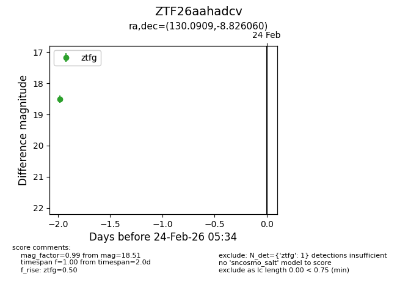
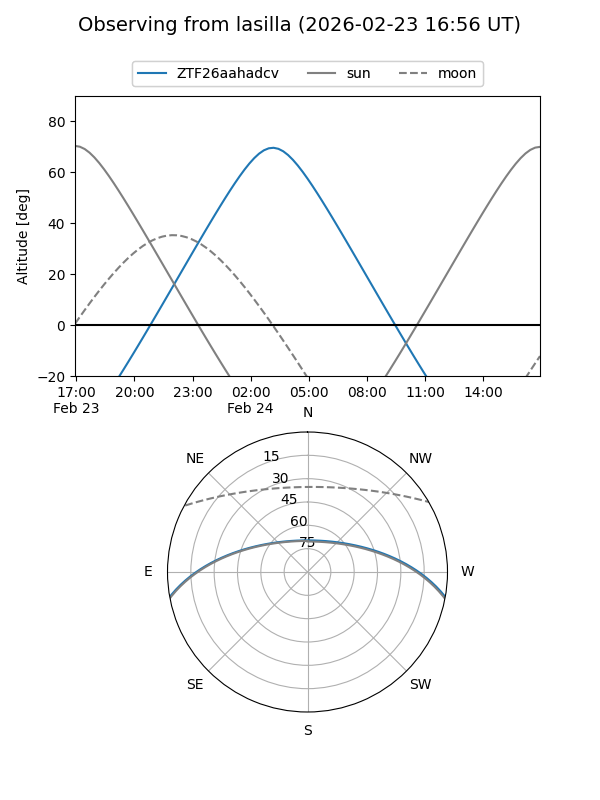
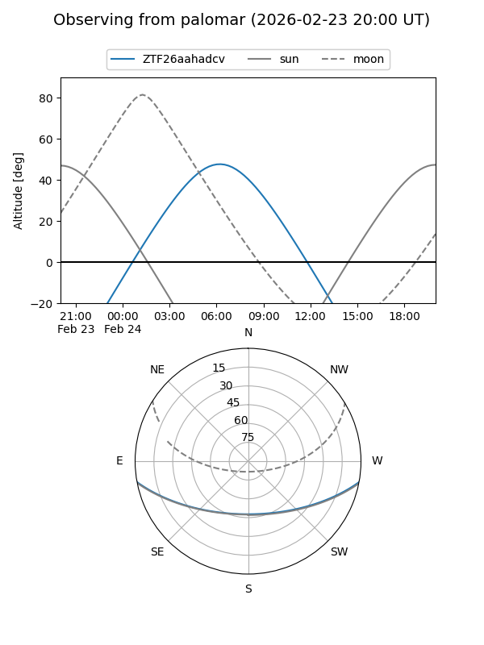

ZTF26aahadcv
Target ZTF26aahadcv at 2026-02-24 09:08
Aliases and brokers:
FINK: link
Lasair: link
ALeRCE: link
alt names
ZTF26aahadcv (ztf,fink_ztf)
Coordinates:
equatorial (ra, dec) = 130.0909,-8.82606
equatorial (HMS+DMS) = 08:40:21.81,-08:49:33.82
galactic (l, b) = (234.2416,+19.41811)
Flags:
Photometry:
last ztfg=18.51
1 ztfg detections
Lightcurve

Visibility


Additional plots